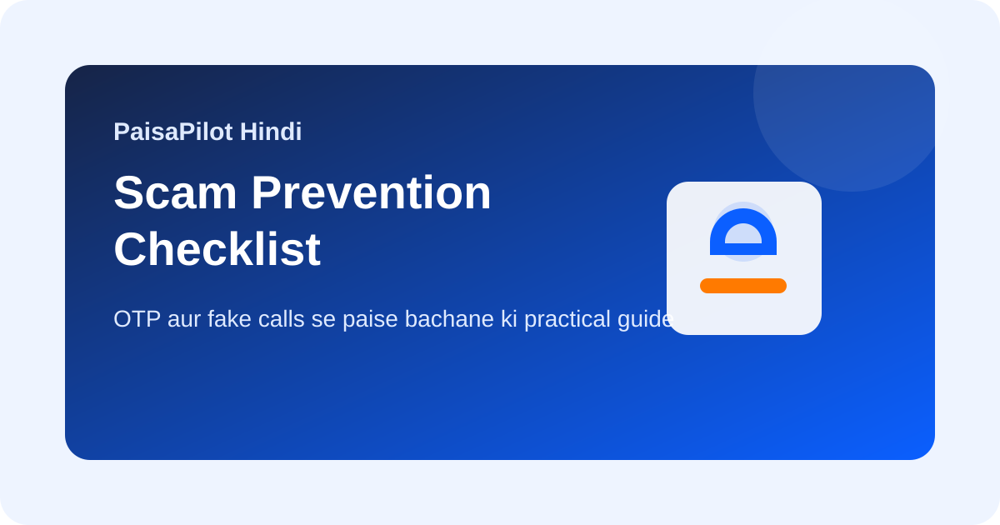

Scam Prevention Checklist: paise bachane ke 10 practical rules
Last updated: March 30, 2026

Most scams technical complexity se nahi, urgency aur confusion se kaam karte hain. Fake calls, links, OTP traps, refund requests, aur support fraud se bachne ke liye simple rules ka system bahut useful hota hai.
Quick Answer
OTP, PIN, CVV, ya app access kabhi share mat karo. Caller official lage tab bhi independent verification karo. Urgency ko signal samjho, instruction nahi.
10 Practical Rules
- OTP, PIN, CVV, card details share mat karo.
- Random KYC ya payment links par click mat karo.
- Unknown support apps install mat karo.
- Bank ya wallet issue ko official app ya helpline se verify karo.
- UPI collect request samjhe bina approve mat karo.
- "10 minute me account band ho jayega" type pressure ignore karo.
- Transaction alerts on rakho.
- Phone aur app lock strong rakho.
- Small suspicious debits bhi check karo.
- Family members ko bhi same rules sikhao.
Common Scam Patterns
| Pattern | Kya karein |
|---|---|
| Fake KYC update | Official app ya website hi use karo. |
| Refund request | Collect request blindly approve mat karo. |
| Remote support call | Unknown app install mat karo. |
| Prize ya reward fee | Stop karo aur independently verify karo. |
Related Guides
UPI Safety Guide, Bank Statement Review, Subscription Audit Checklist
Editorial Note: Educational information only; fraud suspicion me immediately official bank reporting process follow karein.